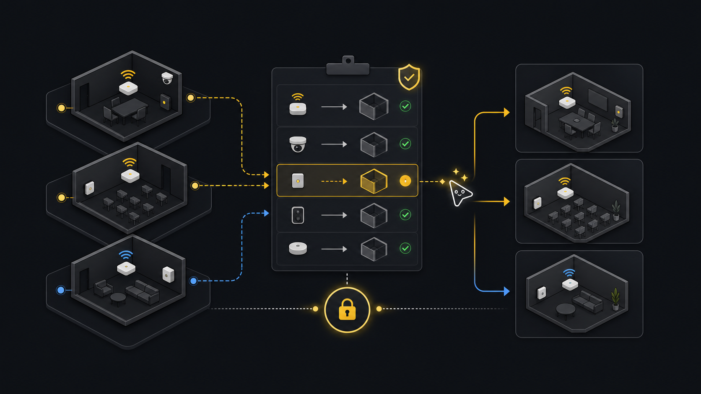

Devices
Device migration.
For room plans, space imports, naming cleanups, and tenant reorganizations that require devices to move without guessed targets.
Ask an agent
Ask for the move you want, not for ids. The agent will discover devices and spaces, build a proposed CSV, dry-run it, and stop before anything moves.
Prepare a plan to move devices to the right spaces. Do not apply it.What the agent will do
- DiscoverGet move requestClarify the device list and destination space when they are not already provided.
- InspectFind recordsRead source devices and target spaces from tenant state.
- ChooseBuild move fileCreate rows only when device and target ids are known.
- StopDry runShow ambiguous rows before applying moves.
- ReturnHandoffProvide the CSV, dry-run report, and rerun path.
Ask how it works first
Ask this before a room cleanup or import when you need to understand the move file and dry-run report.
How do I move devices between spaces with xyte-cli?
How do I build a move CSV?
How do I dry-run device moves before applying them?Goal
A good move starts with current tenant data. Export devices and spaces, create a CSV from those ids, review every row, run a dry-run, and apply only after the target spaces are clear.
Commands
Discover spaces before using ids
Search the space tree by path or name first. Pick the source and target ids from these files before building a move plan.
xyte-cli api call organization.spaces.getSpaces \ --tenant <profile-label> \ --query-json '{"path_includes":"<source-path>","page":1,"per_page":100}' \ > ./artifacts/source-spaces.json xyte-cli api call organization.spaces.getSpaces \ --tenant <profile-label> \ --query-json '{"path_includes":"<target-path>","page":1,"per_page":100}' \ > ./artifacts/target-spaces.jsonExport source devices and target spaces
Use explicit filters so the move plan is scoped to the intended part of the tenant.
xyte-cli api call organization.devices.getDevices \ --tenant <profile-label> \ --query-json '{"space_id":"<source-space-id>","page":1,"per_page":100}' \ > ./artifacts/source-devices.json cat ./artifacts/target-spaces.jsonCreate a proposed move CSV
Start with name matching when device names and space names are intentionally aligned. If they are not, prepare the CSV manually.
xyte-cli util match \ --tenant <profile-label> \ --source ./artifacts/source-devices.json \ --target ./artifacts/target-spaces.json \ --source-field name \ --target-field name \ --out ./artifacts/device-moves.csv \ --strict-jsonDry-run the move plan
Dry-run reports planned rows and row-level problems without moving anything.
xyte-cli util move-devices \ --tenant <profile-label> \ --input ./artifacts/device-moves.csv \ --report ./artifacts/device-migration.dry-run.ndjsonApply reviewed rows
Apply only after checking the CSV and dry-run report.
xyte-cli util move-devices \ --tenant <profile-label> \ --input ./artifacts/device-moves.csv \ --apply \ --report ./artifacts/device-migration.apply.ndjson
Review the plan
- Every row needs a known
device_idandtarget_space_id. - Remove rows where the target was guessed from a weak name match.
- Keep dry-run and apply reports separate so you can compare planned versus executed rows.
- After apply, inspect the moved devices rather than assuming the command output is the final tenant state.
device_id,target_space_id,device_name,target_space_name
<device-id>,<space-id>,"Room 101 Display","HQ / Floor 1 / Room 101"Close the move only after the apply report has no failed rows and the moved devices read back with the expected space_id. If matches are weak, target spaces are invalid, only part of the file applied, or rows still point to old spaces, fix the rows before continuing.
Make this repeatable
# Environment
XYTE_PROFILE=<profile-label>
MOVE_FILE=./artifacts/device-moves.csv
# Rerun path
xyte-cli util move-devices --tenant "$XYTE_PROFILE" --input "$MOVE_FILE" --report ./artifacts/device-migration.dry-run.ndjson
xyte-cli util move-devices --tenant "$XYTE_PROFILE" --input "$MOVE_FILE" --apply --report ./artifacts/device-migration.apply.ndjsonIf it fails
Edit the CSV directly or rerun matching with a better source or target field.
Re-export spaces and replace the target ids before applying.
Fix only the failed rows and rerun. Use --continue-on-error only when partial completion is acceptable.